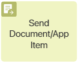The Send Document/App Item activity is used in a process when its participants need to get informed about the contents of a file, a document, or an app item. The users receive a task containing a link to the object that they have to view or read. After that, a list of informed users is created on its page. It contains the employee’s decisions, comments, and additional files.
To learn how to use the activity in a business process, refer to the Send for information use case article.
To open the activity settings, double-click on it on the process diagram. Configure settings on the General, Form, Deadline, Schedule in Calendar, Connectors, Custom Statuses, Signature, and Substitutions tabs.
начало внимание
Before configuring the settings, make sure that the process context contains a variable for storing the object that the users will have to view or read.
конец внимание
General tab
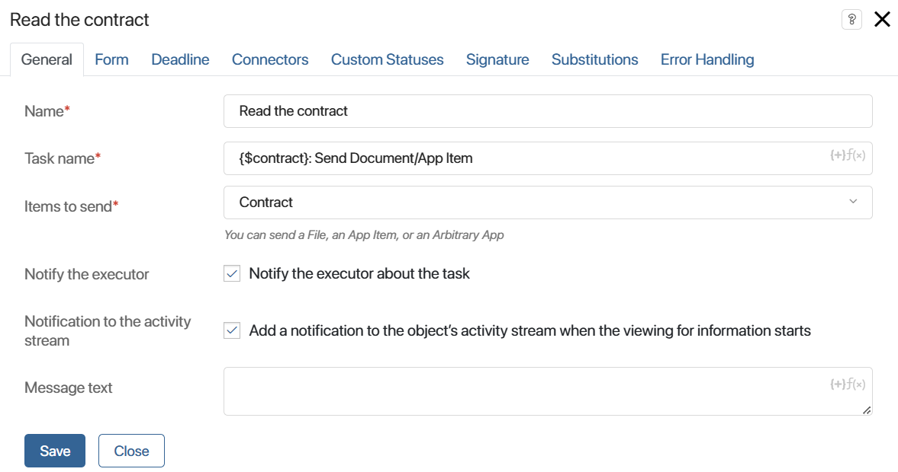
- Name*. Enter the text that will be shown on the process diagram.
- Task name*. Enter a brief and informative subject. It will be used as the title for the task shown to users in their #Activity stream. To include context variables in the subject, click on the {+} symbol in the right corner of the field. You can also add conditions and functions, just like for the item name templates. This allows you to generate a more informative name for the task.
- Items to send. Select the context variable storing the file, document, or app item that you want the users to view or read.
- Notify the executor. If this option is enabled, the executor will receive a notification in their #Activity stream when the task is assigned.
- Notification to the activity stream. If this option is enabled, a message about the start of the task will be sent to the object’s activity stream.
- Message Text. Here you can specify all the information that you want the employees to see. Also, you can use context variables to, for example, add a comment of a process participant. To include a variable, click on the {+} symbol in the right corner of the field. You can also add a condition or a function in the same way as in the Task name* field.
Form tab
This tab appears if an app item has been sent for review. It allows you to configure your own review form from scratch. If you want to use the default form, you do not need to change the settings on this tab.
To create a form, click Default and then click +Create Form.
This opens the form template in the interface designer. Place the widgets and buttons you want on the form. You can apply scripts, set form validation, and so on. Save the settings.
To customize the display of the properties of the app item being sent for information, go back to the Form tab in the activity settings.
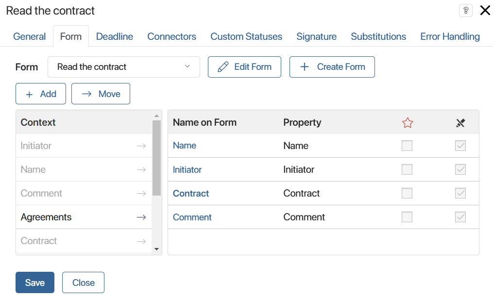
Place the required fields on the form or create new ones. Set the settings of their visibility and mandatory filling. These actions are similar to the form settings in the Task element. Please note that these settings are available only for a custom form.
Deadline tab
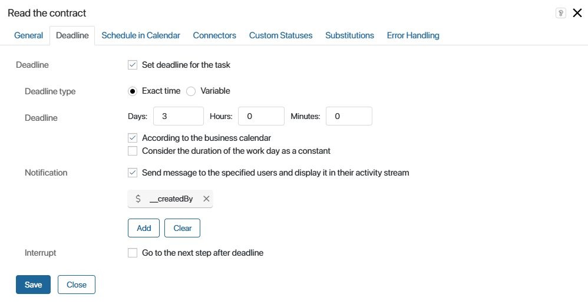
On this tab, you can configure the due date for the task, as well as determine what happens if the task is not completed at the specified time.
There are two ways to set the deadline:
- Exact Time. Specify the number of days, hours, or minutes that the executor has to complete the task. The calculations can be based on the business calendar.
- Variable. Sometimes it is important that the user completes the task before a certain date. For example, an employee can specify the exact date before which others need to read the new internal regulations. By this day, all specified users should have read the document. In this case, you can use a context variable of the Date/Time type to determine the deadline for the task.
- Consider the duration of the work day as a constant. This option is available when the business calendar is taken into account. It allows calculating the task deadline based on the number of working hours per day. The time specified in the business calendar settings in the Standard work schedule field is used for calculation.
If the task belongs to a swimlane with multiple executors and a variable is used to define the deadline, all the executors will have to complete their tasks by the specified moment. Otherwise, the task will be considered overdue.
In the Notification field, you can select users who will be notified if the executor fails to complete the task on time. You can select the current user, a context variable (for example, the process initiator), a user group, or an org chart item.

By default, a message will be sent to all employees specified in the swimlane settings. To select other recipients, click the Add button.
- Current User. Executor of the swimlane where the activity is placed.
- Context variable. The recipient is specified in a process context variable of the User type.
- Group. The message will be sent to a specific user group.
- Org Chart Item. You can specify the recipient using an org chart item.
In the Interrupt field, determine what the next step in the process will be if the executor does not have time to complete the task before the specified time.
BRIX will automatically select the specified connector if the set time expires and the executor does not confirm that the task has been completed. On the process diagram, such a connector is marked with a clock icon.
Schedule in Calendar tab
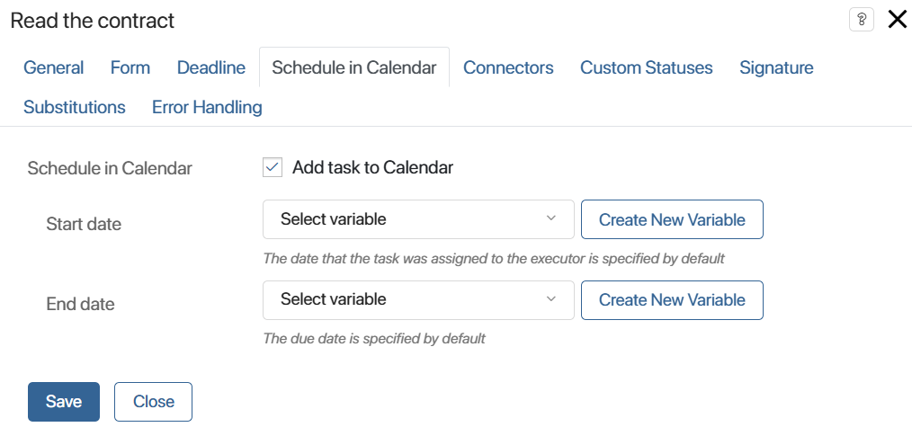
This tab appears if the task has a deadline. Here you can enable the task to be displayed in the executor's calendar.
To avoid cluttering the calendar, you can schedule the task only on specific days. For example, if the review period is three days, you can choose to display the task in the calendar only on the last day. To do this:
- Add Date/Time type variables to the context, which will store the values for the task deadlines in the calendar.
- Before the Send document/App item activity in the process diagram, place a script that calculates the values of these variables.
- On the current tab, link the Start date and End date fields to these variables.
Connectors tab
This tab is used to configure outgoing connectors.
The main connector, where the process will continue after the user is informed, needs to be marked as the default one.
You can also add error-handling connectors to the process diagram. Their settings specify the conditions under which the process will automatically continue along the corresponding branches. For example, an additional connector can be used when a file sent for review has been deleted, a new version of the document has been added, or the user does not have permissions to view it. If the condition is met, the process will go down this path, and the Rejected status will be written to the file page or item page.
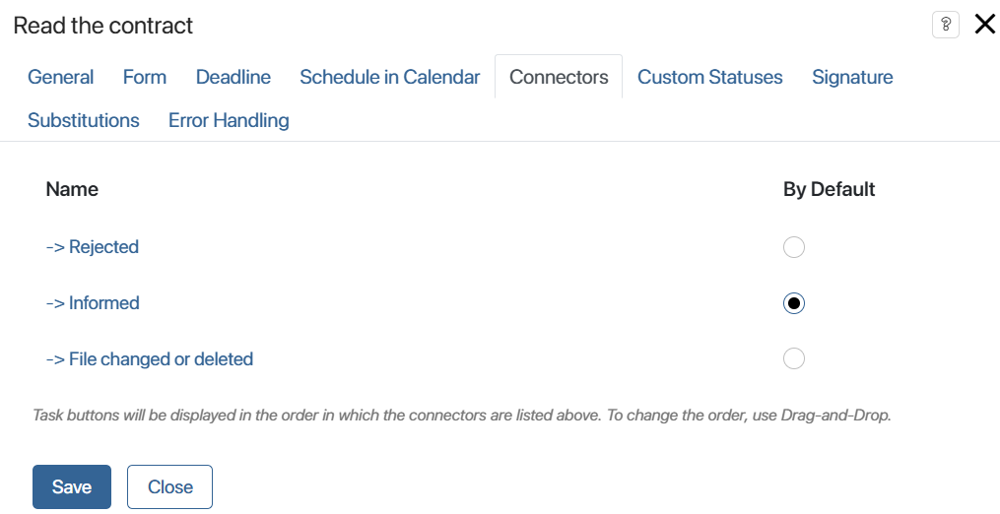
Please note that if an escalation connector is configured on the Deadline tab, the other connectors can only be activated before the task deadline.
начало внимание
Since the process is routed through additional connectors automatically, there are no buttons for them in the review task. By default, the user will only see the Informed button. You can add buttons to make a custom decision on review, but they do not affect the selection of a connector during the process execution.
конец внимание
To open the window with connector settings, click on its name.
On the General tab, enter a name for the connector that will appear on the process diagram. You can also enter a description.
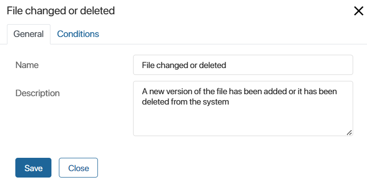
Then go to the Conditions tab, click +Add Condition, and specify:
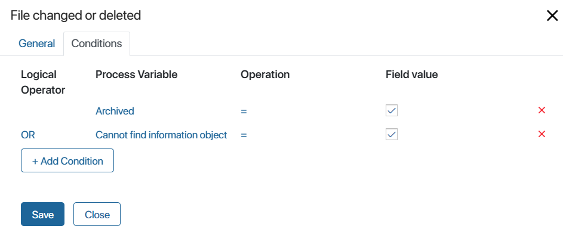
- Process Variable. Specify a variable from the process context or a specific value:
- Archived. Check whether the list of informed users has been archived. Please note that for items, the rules of list archiving are set in the app settings. For files, lists are always archived when a new version is added.
- Cannot find information object. Check that the object is not deleted from the system. Please note that this option works only when a file is sent for information. If an app item is being sent, the process will be terminated with an error upon its deletion.
- No access to the information object.
- Operation. Specify a comparison operator to check a specific condition.
- Field value. Enter the value with which the condition will be considered fulfilled.
- Logical Operator. Determine which logical operations to apply when checking several conditions:
- AND. The result is True if both conditions that this operator connects are met.
- OR. The result is True if at least one of the conditions that this operator connects is met.
- AND NOT. The result is True if the first condition is met while the second condition is not.
- OR NOT. The result is True if the first condition is met or the second condition is not.
Please note that the conditions are checked in the order they are listed in the connector settings.
For review tasks placed in the swimlane with multiple executors, the transition conditions are checked each time one of the users completes the task.
For more information about using connectors in processes, see the Connectors article.
Custom Statuses tab
When creating a custom status in the task, an additional button will appear. With its help, employees will be able to provide custom decisions within the standard process of sending documents and app items for review.
Depending on what object (app item or file) is stored in the variable specified on the General tab in the Items to send field, the button will appear on the item page or on the file preview page.
начало внимание
The buttons in the review task are used only for specifying custom decisions and do not determine the further course of the business process. Regardless of the selected button, if the review is completed successfully, the process will continue with the default connector selected in the settings.
конец внимание
For instance, you can add the Requires Clarification status. An employee can complete the task of viewing a document and specify that they have questions after reading it. The document progress through the process will continue according to the logic defined by the outgoing connectors. In the list of informed users, opposite the name of the user who selected this decision, the Requires Clarification status will appear.
The final status of the item, regardless of the chosen decisions, will be Informed.
To configure a custom status, enable the Use custom status option and fill in the fields that appear:
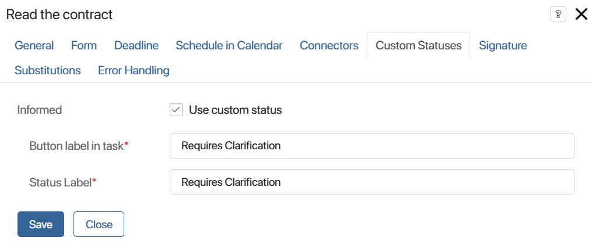
- Button label in task*. Enter the name of the button that the user will click to complete the task. The additional button will be displayed next to the Informed system button. 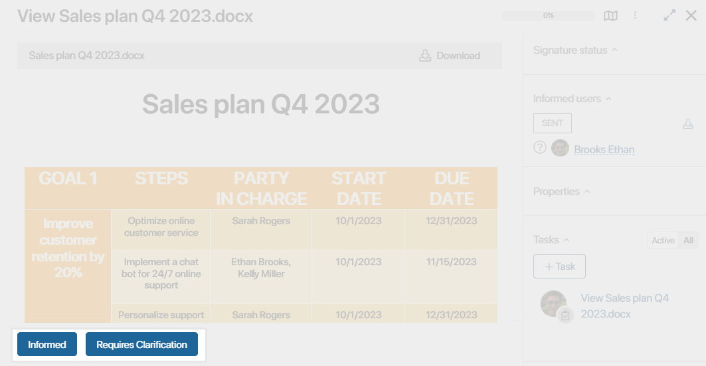
- Status Label*. Enter the name of the status that will be displayed in the list of informed users after closing the task.
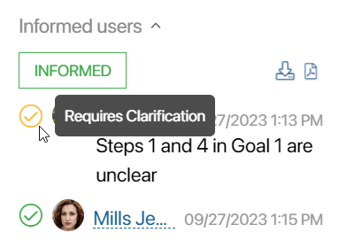
The custom status will be shown in the list of informed users and will also be displayed alongside the Informed system status when the list is exported.
Signature tab
You can configure the use of electronic signature at the reviewing step. In this case, the user clicks the Informed button in the incoming task and then enables the signing option. In the opened window, the employee selects the objects for signing: attributes and file. In this way, they confirm that they have reviewed the document. The data about it are saved on the page of the signed app item. To learn more about how to perform such a task and where to view the details of the applied electronic signature, see the Digital signature in apps article.
To enable signing of the review object, on the Signature tab set the parameters in the same way as for the Approval activity. The only option missing in the settings is Sign Decision because when getting informed, no resolution is made on the document. Read more about it in the Approval article.
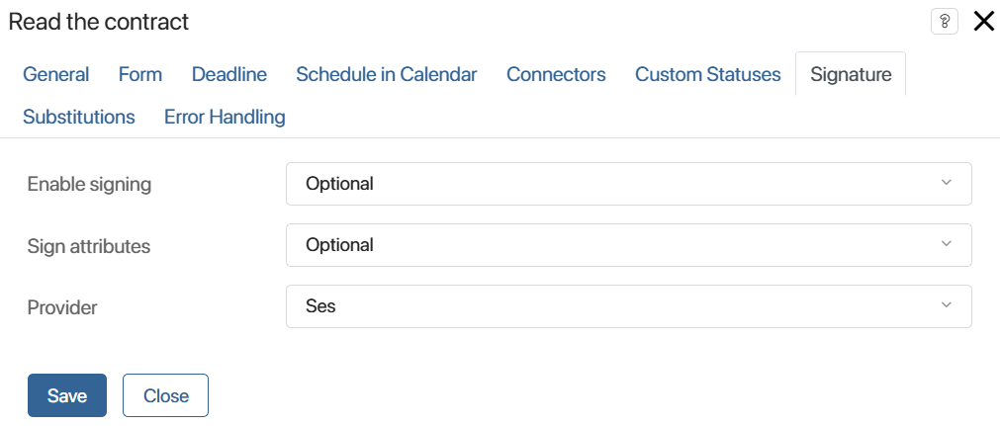
Substitutions tab
On this tab, you can specify a variable that controls the reassignment of the task to an employee who substitutes the primary performer.

In the Ignore substitution field, specify a variable from the business process context of the Yes/No switch type.
If the variable is set to Yes, the task will be assigned to the initially specified approver, and if it is set to No, it will be assigned to the substitute employee. The value of the variable can be changed during the business process, for example, by placing the variable on the form of another task, or by using scripts.
For example, you can ignore substitution if the document to be read contains confidential data that should not be disclosed to third parties.
List of informed users
Once the process reaches the Send document/App item activity, a notification about the assigned task with a link to a file, document, or app item is displayed in the #Activity stream of executors.
A list of informed users is created on the object page with a list of employees to whom tasks have been assigned. A question mark is displayed next to the user who has not yet viewed the document. After the task is completed, the date, time, and the comment left, and the file attached during the review are added to the list.
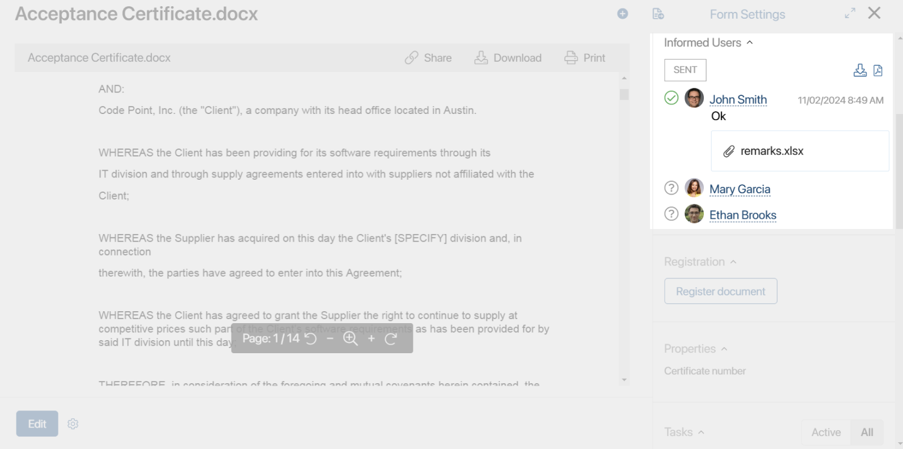
If a document has been sent to multiple executors, you can view the entire list by clicking All users in the list. By applying a filter, you can find out which employees have not yet completed the task.
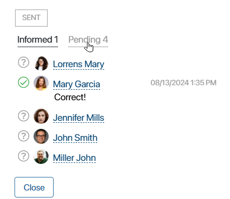
You can download the list of informed users as an .xlsx or a .pdf file. To do this, click the required upload button in the sidebar of the document.
Read more in the Lists of informed users and approval sheets article.